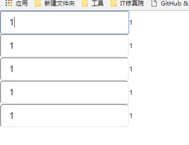
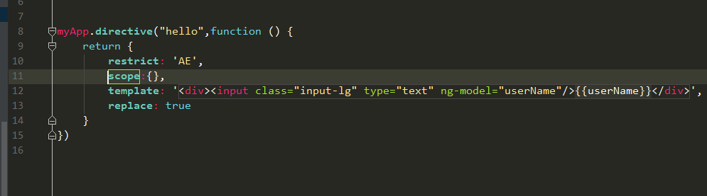

分享人：龚海
目录
1.背景介绍
2.知识剖析
3.常见问题
4.解决方案
5.编码实战
6.扩展思考
7.参考文献
8.更多讨论
在平时的编码中，我们总会想着有什么方法能够简化我们的工作流程，让我们只专心于业务逻辑和数据的处理，而angularjs 就为我们实现了这一点。$scope $rootScope $watch 和 $state就是里面的几个方法，今天着重跟大家讨论一下这 几个方法
$scope其本身是一个普通的JS对象，其次是一个表达式的执行环境。 $scope 的使用贯穿整个 AngularJS App 应用,它与数据模型相关联,同时也是表达式执行的上下文.有了$scope 就在视图和控制器之间建立了一个通道,基于作用域视图在修改数据时会立刻更新 $scope,同样的$scope 发生改变时也会立刻重新渲染视图.因为 $scope 并不处理和操作数据,它只是建立了视图和 HTML 之间的桥梁,让视图和Controller 之间可以友好的通讯。
在angularjs中，你可以把它理解成作用域，每个不同的controller，都具有它不同的作用域，所以controller不同，他们的scope是不同的，那么，如果我们想象js那样，做一个全局变量该怎么办呢？这就要说到rootScope了
$rootScope就相当于一个全局作用域，所以我们保存在其中的东西是全局性的，在任一controller之中，都能取用。用rootscope定义的值，可以在各个controller中使用。
scope是html和单个controller之间的桥梁，数据绑定就靠他了。rootscope是各个controller中scope的桥梁。
AngularJS 应用启动并生成视图时,会将根 ng-app 元素与 $rootScope 进行绑定.$rootScope 是所有$scope 的最上层对象,可以理解为一个 AngularJS 应用中得全局作用域对象,所以为它附加太多逻辑或者变量并不是一个好主意,和污染 Javascript 全局作用域是一样的。相信使用过angularjs的同学都知道，ng中有个比较重要的特点，叫做双向绑定，那么这个双向绑定是如何实现的呢？ 当我们在创建出scope下的一个新属性的时候，ng就会主动为我们新属性加上$watch这个方法，这个方法会监听我们的数据变化，当数据变化之后，就立即把view和scope上数据同步。
$watch(watchExpression, listener, objectEquality);
watchExpression,需要监控的表达式
listener,处理函数，函数参数如下 function(newValue,oldValue, scope)
objectEquality,是否深度监听，如果设置为true,它告诉Angular检查所监控的对象中每一个属性的变化. 如果你希望监控数组的个别元素或者对象的属性而不是一个普通的值, 那么你应该使用它
在ajax技术发展普及之后，因为其不会留下历史记录方便浏览器访问和对于seo不友好的特点，一个新技术应运而生： 路由，$state就是路由中的一项服务。
如何让相同的指令，具有不同的作用域
只需要在指令中加上scope:{},就能把它的作用域独立出来啦！每用一次指令都会有一个不同的作用域哟
它的效果是
我们可以看到，它全都具有相同的作用域
如果我们需要它有不同的作用域，如何实现呢？
{ }：创建一个新的“隔离”scope，但仍可与父scope通信
隔离的scope，通常用于创建可复用的指令，也就是它不用管父scope中的model。然而虽然说是“隔离”，但通常我们还是需要让这个子scope跟父scope中的变量进行绑定。绑定的策略有3种：
@：单向绑定，外部scope能够影响内部scope，但反过来不成立
=：双向绑定，外部scope和内部scope的model能够相互改变
&：把内部scope的函数的返回值和外部scope的任何属性绑定起来
成功！！
路由的具体用法
此处可点→→→ui-rooter的使用方法
参考一：深度理解scope
参考三：深度理解scope
大家有什么不懂的可以相互交流一下呀
感谢大家观看
BY : 龚海